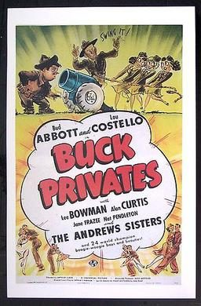

Buck Privates

Starring: Bud Abbott, Lou Costello, Lee Bowman
Director: Arthur Lubin
Writer: Arthur T. Horman
Producer: Alex Gottlieb
Buck Privates is a 1941 American musical military comedy film directed by Arthur Lubin that turned Bud Abbott and Lou Costello into bona fide movie stars. It was the first service comedy based on the peacetime draft of 1940. The comedy team made two more service comedies before the United States entered the war (In the Navy and Keep 'Em Flying). A sequel to this movie, Buck Privates Come Home, was released in 1947.
Trivia
- Nominated for: Academy Award for Best Original Musical Score.
- The film was originally conceived as a straight military story with Lee Bowman, Alan Curtis, and Jane Frazee in a romantic triangle, and Bud Abbott and Lou Costello offering comedy relief, as they had in their previous film One Night in the Tropics.
- The "drill routine", where Smitty tries to get Herbie and other soldiers to march in formation, had been performed by Abbott and Costello on stage for more than three years, where it lasted about two-and-a-half minutes.
- Director Arthur Lubin and film editor Arthur Hilton, recognizing the potential for a major comedy scene, combined footage from all the various takes—in which Abbott and Costello never performed the same way twice—and extended the drill routine into a five-minute sketch that became a highlight of the finished feature.
Previous Showings
2 Runs • 1 Festival
Original Billings: 1 run (April 17, 1941)
Original Run: April 17, 1941 (Thursday - Saturday)
All runs on record (2):
- April 17, 1941 (Thursday - Saturday)Abbott & Costello, Andrews Sisters
- November 7 - 9, 2012UNIVERSAL PICTURES Part 2: 1940-1945w/ Hold That Ghost